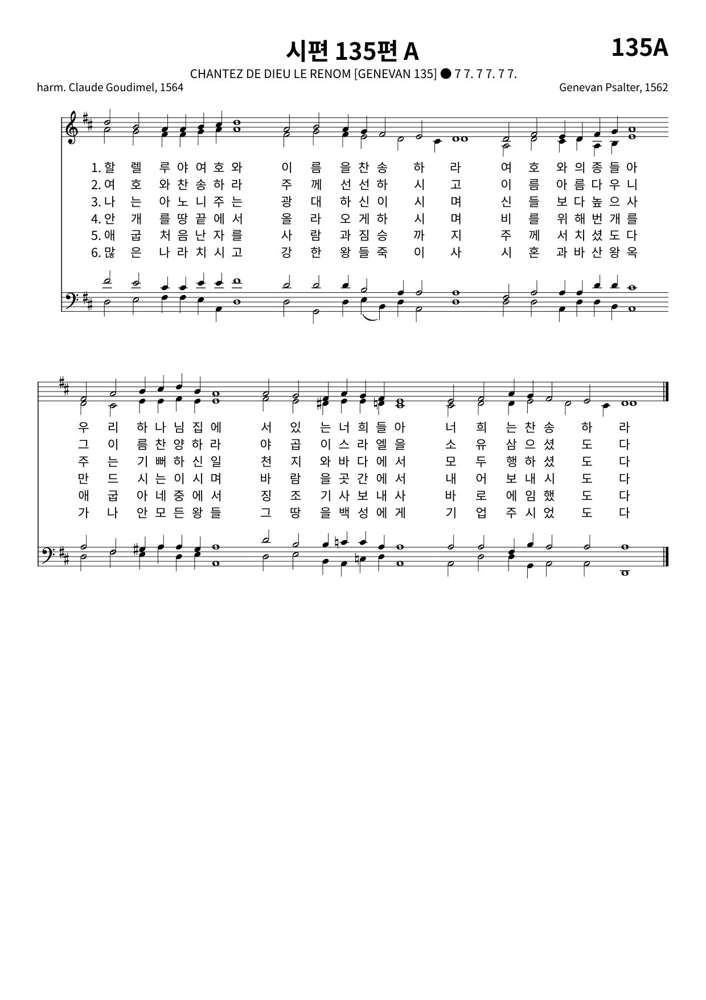

시편 135편 A
CHANTEZ DE DIEU LE RENOM [GENEVAN 135] · 7 7. 7 7. 7 7.
곡조: Genevan Psalter, 1562 · 화성: Claude Goudimel, 1564 · 가사: 개역한글판 시편 135편 편역(AI 초벌 편역판 · 신학 감수 전) · 6절
시편 135편은 2곡으로 나누어 실었습니다: A B · 이 곡은 시편 135편 가사의 1~6번째 절입니다.
악보 PDF MusicXML(출력용) MusicXML(반주용, 전주·반복 포함) 개역한글 시편 135편 읽기
악보
← 시편 134편 목록반주 재생(준비 중)시편 135편 B →
가사
1절
할렐루야 여호와
이름을 찬송하라
여호와의 종들아
우리 하나님 집에
서 있는 너희들아
너희는 찬송하라
할렐루야 여호와
이름을 찬송하라
여호와의 종들아
우리 하나님 집에
서 있는 너희들아
너희는 찬송하라
2절
여호와 찬송하라
주께선 선하시고
이름 아름다우니
그 이름 찬양하라
야곱 이스라엘을
소유 삼으셨도다
여호와 찬송하라
주께선 선하시고
이름 아름다우니
그 이름 찬양하라
야곱 이스라엘을
소유 삼으셨도다
3절
나는 아노니 주는
광대하신 이시며
신들보다 높으사
주는 기뻐하신 일
천지와 바다에서
모두 행하셨도다
나는 아노니 주는
광대하신 이시며
신들보다 높으사
주는 기뻐하신 일
천지와 바다에서
모두 행하셨도다
4절
안개를 땅 끝에서
올라오게 하시며
비를 위해 번개를
만드시는 이시며
바람을 곳간에서
내어 보내시도다
안개를 땅 끝에서
올라오게 하시며
비를 위해 번개를
만드시는 이시며
바람을 곳간에서
내어 보내시도다
5절
애굽 처음 난 자를
사람과 짐승까지
주께서 치셨도다
애굽아 네 중에서
징조 기사 보내사
바로에 임했도다
애굽 처음 난 자를
사람과 짐승까지
주께서 치셨도다
애굽아 네 중에서
징조 기사 보내사
바로에 임했도다
6절
많은 나라 치시고
강한 왕들 죽이사
시혼과 바산 왕 옥
가나안 모든 왕들
그 땅을 백성에게
기업 주시었도다
많은 나라 치시고
강한 왕들 죽이사
시혼과 바산 왕 옥
가나안 모든 왕들
그 땅을 백성에게
기업 주시었도다